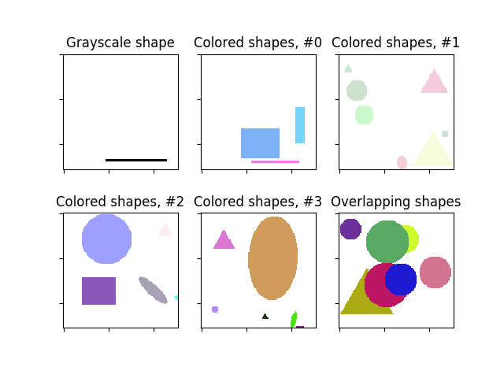

Source
SourceNote
Click here to download the full example code or to run this example in your browser via Binder
Random Shapes¶
Example of generating random shapes with particular properties.
Out:
Image shape: (128, 128)
Labels: [('rectangle', ((117, 119), (47, 116)))]
import matplotlib.pyplot as plt
from skimage.draw import random_shapes
# Let's start simple and generate a 128x128 image
# with a single grayscale rectangle.
result = random_shapes((128, 128), max_shapes=1, shape='rectangle',
multichannel=False, random_seed=0)
# We get back a tuple consisting of (1) the image with the generated shapes
# and (2) a list of label tuples with the kind of shape (e.g. circle,
# rectangle) and ((r0, r1), (c0, c1)) coordinates.
image, labels = result
print(f"Image shape: {image.shape}\nLabels: {labels}")
# We can visualize the images.
fig, axes = plt.subplots(nrows=2, ncols=3)
ax = axes.ravel()
ax[0].imshow(image, cmap='gray')
ax[0].set_title('Grayscale shape')
# The generated images can be much more complex. For example, let's try many
# shapes of any color. If we want the colors to be particularly light, we can
# set the `intensity_range` to an upper subrange of (0,255).
image1, _ = random_shapes((128, 128), max_shapes=10,
intensity_range=((100, 255),))
# Moar :)
image2, _ = random_shapes((128, 128), max_shapes=10,
intensity_range=((200, 255),))
image3, _ = random_shapes((128, 128), max_shapes=10,
intensity_range=((50, 255),))
image4, _ = random_shapes((128, 128), max_shapes=10,
intensity_range=((0, 255),))
for i, image in enumerate([image1, image2, image3, image4], 1):
ax[i].imshow(image)
ax[i].set_title(f"Colored shapes, #{i-1}")
# These shapes are well suited to test segmentation algorithms. Often, we
# want shapes to overlap to test the algorithm. This is also possible:
image, _ = random_shapes((128, 128), min_shapes=5, max_shapes=10,
min_size=20, allow_overlap=True)
ax[5].imshow(image)
ax[5].set_title('Overlapping shapes')
for a in ax:
a.set_xticklabels([])
a.set_yticklabels([])
plt.show()
Total running time of the script: ( 0 minutes 0.159 seconds)